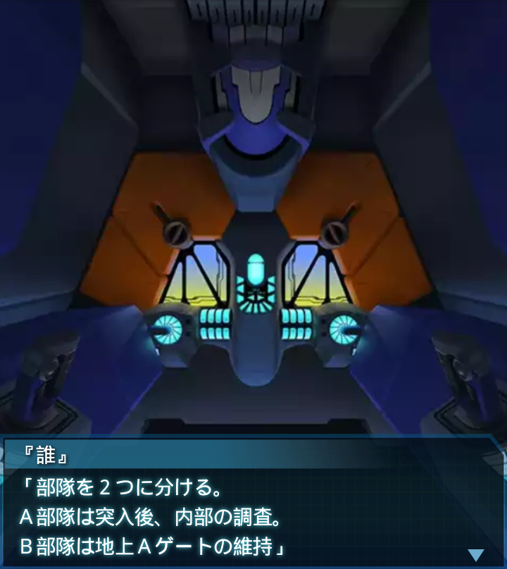

南アフリカ・ベン＝エティーブNR1
イーフェイ
「うわ。何よ、このＢＥＴＡの数
孵化したカマキリの卵みたいに
群れてるんですけど」
『誰』
「神宮司少佐の情報通りだな。
ベン＝エティーヴ自然保護区か。
けどこれじゃ――」
イーフェイ
「まるでＢＥＴＡ保護区じゃない。
それより、研究施設があるのは
地下なんですよね？」
『誰』
「ああ。アフリカ連合軍が発見し、
監視していたとの事だ。まったく、
ひた隠しにしやがって…」
『誰』
「噂では、施設にアフリカ連合軍の
マークが描かれていたものの、
軍部には憶えがないらしい」
篁唯依
「つまり、どこかの世界のアフリカ
連合軍が作ったという事か…。
その噂が事実だとすれば――」
イーフェイ
「初めて研究施設の所属が明らかに
なるわね。軍が人工反応炉の研究に
関わってた…ま、あり得るか」
篁唯依
「そんな風に言われるから隠蔽した
のだろう。今更駆り出された現場の
衛士達はたまらないな…」
『誰』
「それでも叩く気になったんだ。
神宮司少佐がどう交渉したのかは
知らないが、絶対に成功させる」

『誰』
「部隊を２つに分ける。
Ａ部隊は突入後、内部の調査。
Ｂ部隊は地上Ａゲートの維持」
『誰』
「Ａ部隊は俺達とバオフェン中隊、
Ｂ部隊は残り全機に任せる」
『誰』
「よし、全機作戦開始！
誰一人死ぬんじゃないぞ！」

イーフェイ
「Ａゲート確保！地下施設入り口
まで５００！一気に行きましょう！
突入命令をッ！！」
『誰』
「よし、Ａ部隊、俺に続け！
蹴躓いて転ぶなよ！
手は貸してやれないからな！」
イーフェイ
「了解！」
『誰』
「一刻も早く、内部の調査を終えて
帰還する！彼らの負担を
１秒でも減らすんだ！